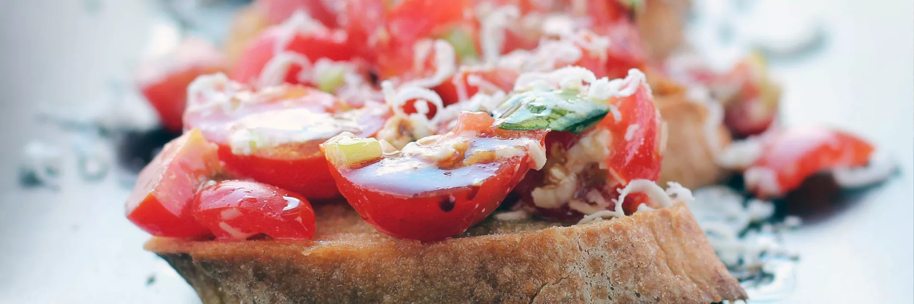

Bruschetta

Bruschetta (pronounced brew-SKET-tah) is an Italian dish that starts with a slice of rustic Italian bread brushed with olive oil and grilled over coals until toasted. You can serve bruschetta by simply rubbing a halved garlic clove over its crusty grilled surface for a minimalist approach, or you can top bruschetta with a wide array of ingredients such as chopped tomatoes, basil, fresh mozzarella, olives, onions, artichoke hearts, and so on.
Ingredients
- Olive Oil
- Garlic
- Roma Tomatoes
- Balsamic Vinegar
- Basil
- Salt
- Black Pepper
- French Bread
Steps
- For tomato mixture: Heat olive oil in a small skillet or saucepan, add garlic and saute until just starting to turn golden.
- Pour into a large mixing bowl and let cool while you chop the tomatoes and basil.
- Pour tomatoes into the bowl with cooled oil mixture. Add parmesan, basil, balsamic vinegar, salt, and pepper. Toss mixture well. Serve right away over toasted bread and garnish with more parmesan if desired.
- To toast bread: Align bread slices on an 18-by-13-inch baking sheet. Broil the first side until golden brown, then flip slices to the opposite side and broil opposite side until golden brown.